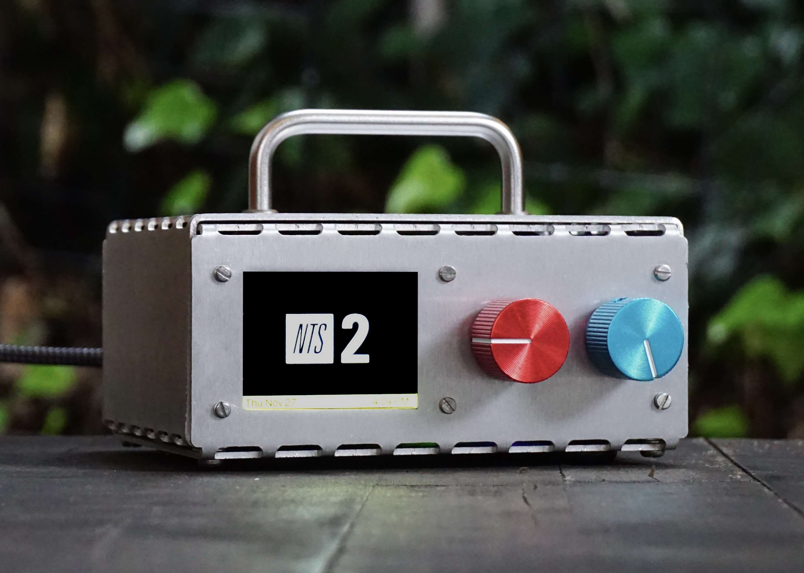
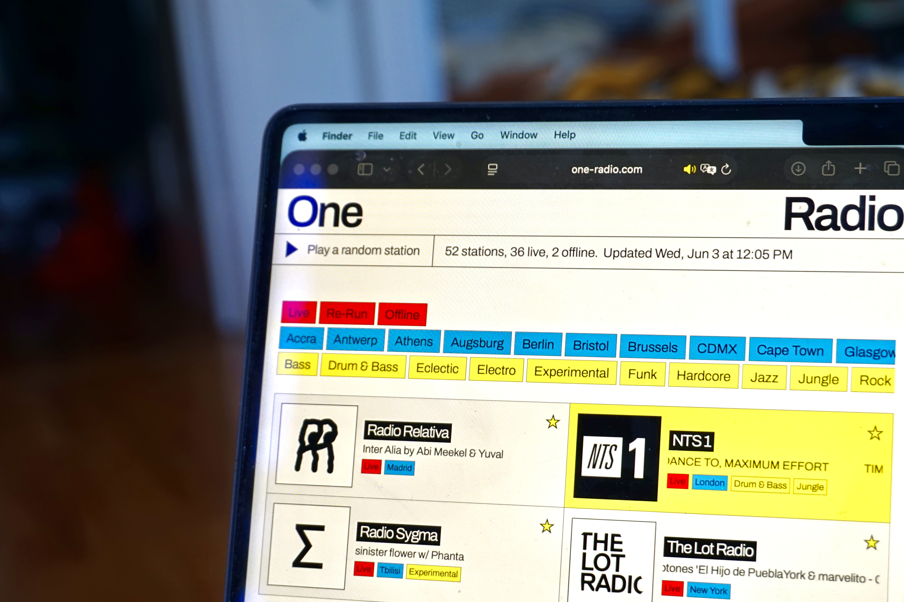

Play

House Radio
A physical device for integrating internet radio streaming into the home. Designed, programmed, soldered, and constructed by me.
One Radio
A centralized hub of up-to-the-minute internet radio data for a curated list of the world's best stations, maintained in GUI and JSON formats.